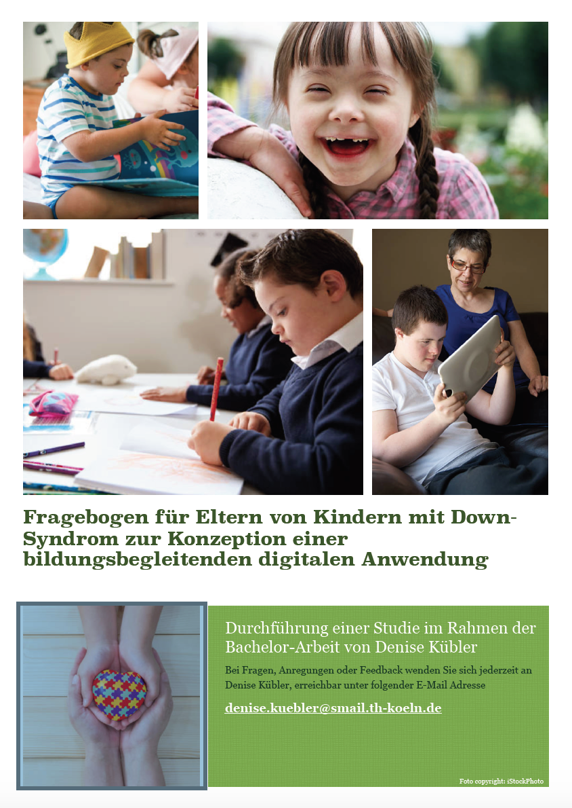

Food Use - Lebensmittel nutzen statt entsorgen
- Project from the Module "Entwicklungsprojekt Interaktive Systeme" at the TH Köln
- Add fruit and vegetables to your inventory via QR-Code

Design einer Studie zur Konzeption einer bildungsbegleitenden Anwendung für Kinder mit Down-Syndrom
- Project from the Module "Entwicklungsprojekt Interaktive Systeme" at the TH Köln
- Add fruit and vegetables to your inventory via QR-Code
